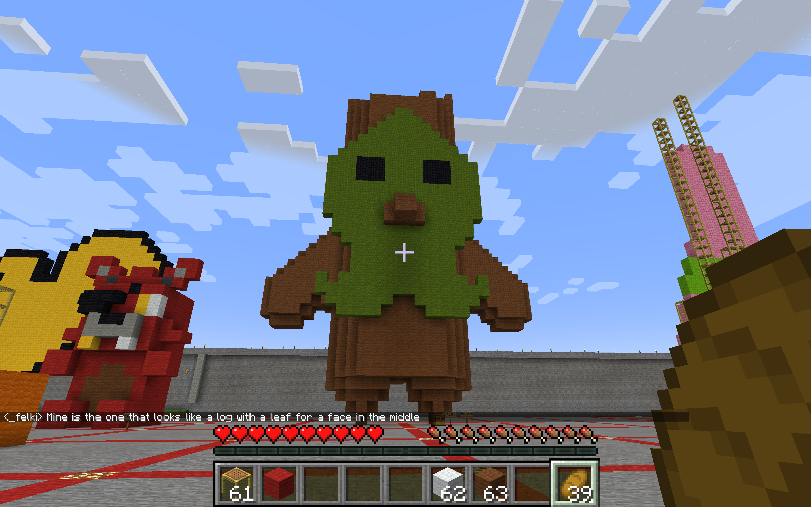

Alice Rennie
3D Print
I 3D printed two Koroks, from the model that I made in minecraft (seen below). ​My draft and my final version ended up being the same size, so I painted them both. I originally added a stand to the final version, because I wanted it to stand, but when removing the print from the 3D printer, I accidentally tore the stand off. So, change of plans - I decided to instead turn these figures into earrings instead. I'm very happy with how these turned out, even if it didn't go according to my original plan.

The Legend of Zelda is very culturally significant when it comes to the world of video games - it was the first ever video game that allowed players to save their files. As the franchise continues to release more and more games, its cultural significance continues to grow - as many people of all generations have explored the different worlds of Hyrule and experienced them together. Currently, Koroks are a huge meme in the Zelda community, due to... how they are treated by players in Tears of the Kingdom, so I thought it'd be a fun idea to make a Korok sculpture in minecraft. I also already have a ridiculous number of korok-themed items, so I thought it'd be funny to add more.
